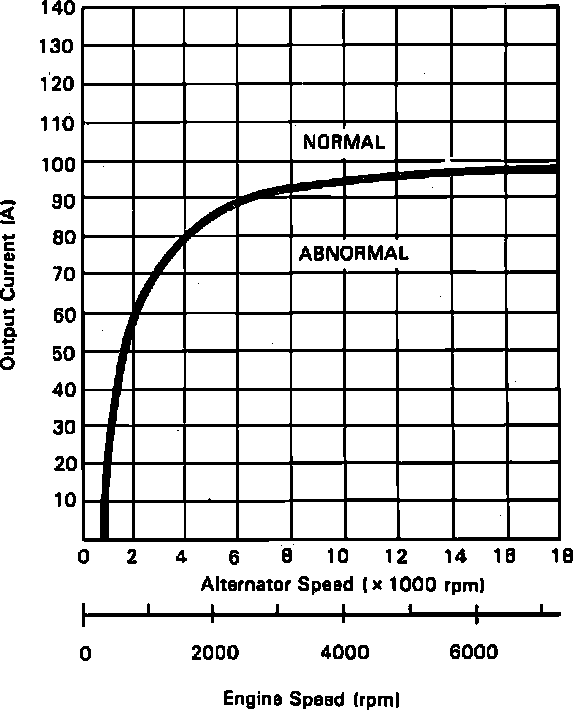

Voltage Regulator: Testing and Inspection
1. Ensure battery is fully charged and that alternator belt, connections at alternator and main fuses are in satisfactory condition.2. Ensure that fuse No. 2 is in satisfactory condition.
3. Disconnect 4-pin connector from alternator.
4. With ignition switch in the On position, check for battery voltage between IG (BLK/YEL) terminal and body ground.
5. If no voltage is present, check for an open in BLK/YEL wire between instrument panel fuse panel and voltage regulator.
6. If voltage is present, follow manufacturer's instructions and connect the Sun alternator test tool No. SUN VAT-40 or equivalent and turn selector to Starting position.
7. Start engine, turn Off all accessories, then move tool selector switch to Charging position.
8. Remove inductive pick-up and zero ammeter.
9. Raise engine speed to 2000 RPM and hold.
10. With engine cooling fans Off apply a load with carbon pile so voltage drops to about 12 volts.
Fig. 9 Alternator Test Specifications:

11. Check maximum amperage reading and compare with chart in Fig. 9.
12. If amperage is normal, system is operating correctly. Perform CHARGE WARNING LAMP TEST.
13. Stop engine, insert a full field tester lead into full field access hole on back of alternator.
14. Move tool test selector to starting.
15. Start engine, raise engine speed to 2000 RPM.
16. Switch tool field selector to the A position momentarily and check amperage reading.
17. If amperage is within specification shown in Fig. 9 replace regulator.
18. If amperage is not within specifications, replace alternator.